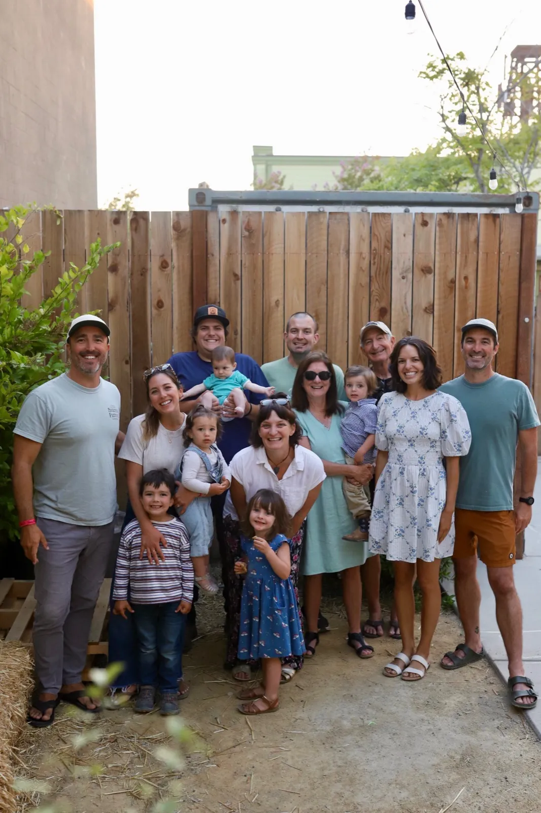
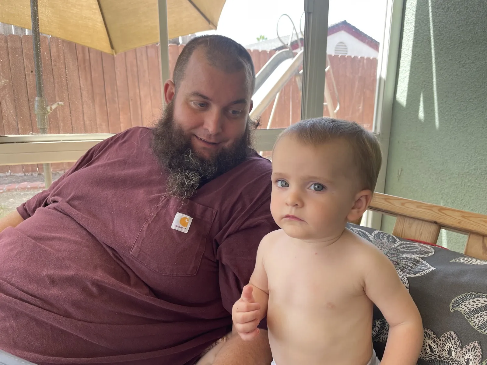
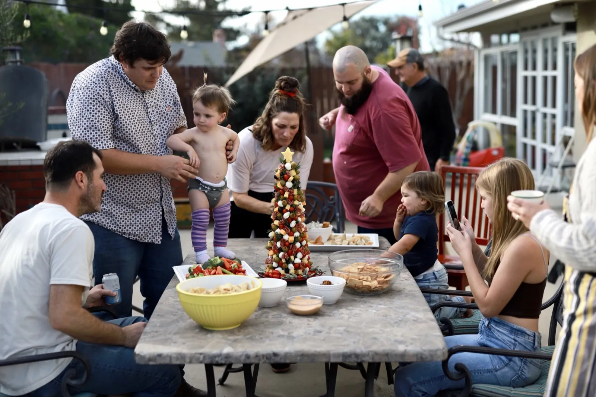
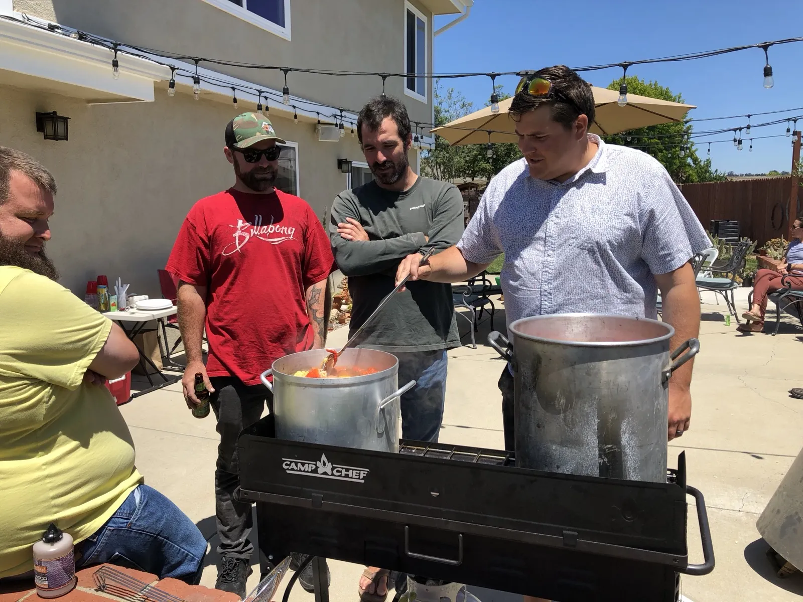
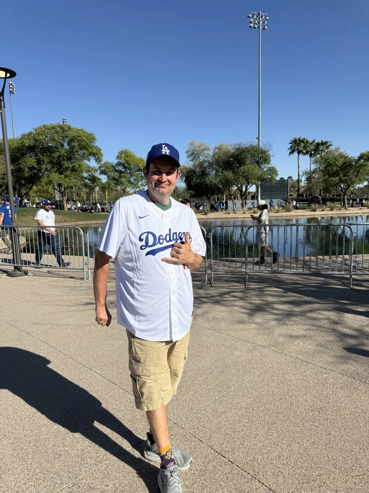

Where I am now
The sting isn’t there anymore
Now, I am running the LA Marathon. Not as a stunt. Not as a maybe. As a real finish line I am training toward — miles under my feet after years when even a steady day felt like a gamble. I am still having breakthrough seizures about once a month or so. That part didn’t vanish. But the sting isn’t there anymore. The fear that used to sit in my chest before every outing, every night’s sleep, every plan I was afraid to make — that weight has eased. A seizure can still come. It no longer owns the whole day before it arrives.
The chains of epilepsy that had bound me for so long were broken. Not because epilepsy disappeared, but because it stopped deciding who I got to be. I no longer fear having a seizure. I respect what my body can do. I prepare. I keep going. It’s just the way my life is — and for the first time in a long time, that sentence feels like freedom instead of a sentence.
I am so thankful that I have an awesome family that has supported me throughout this long process. They sat in waiting rooms. They drove me to appointments. They held the hard days when I couldn’t. They believed in a future I sometimes couldn’t see yet — through childhood scans, telemetry, resection, VNS, DBS, and every breakthrough that tried to knock me back. This story is mine, but I did not walk it alone. Their love is part of why I’m still standing, still training, still choosing the next mile.

2026
I started running
In the early days of the low pulse stimulation, I started walking because I thought it was a good idea to get exercise. I got a 25-pound weight vest to make it harder — haha.
Then came the brilliant idea: run. I hadn’t run since I was a sophomore in high school. So my first run was six miles — which is crazy, because I am partially paralyzed down the right side of my body.
I started running regularly, about five days a week. Then I started to fall. My right foot would drag, catch, and down I’d go. That was a simple fix: I got an AFO — an ankle-foot orthosis that picks my right foot up. I kept running. I recently fell again, so I’ve been on a sabbatical for a few weeks. Rest now. Miles later.
None of this — the walks, the weight vest, the first six miles, the AFO, the road back — happens without the DBS. That low pulse stimulation 24/7 didn’t just quiet the seizures enough for me to move again. It gave me my days back. My depression lifted. Hope stopped feeling like a rumor.
I love my life and I am always so thankful for the life that I was given — for the surgeons and the Medtronic team who kept tuning until we found the setting that held, for a body that still shows up even when the right side fights me, and for every hard mile that proved epilepsy doesn’t get the last word.



Another fight I won
154 pounds
Epilepsy wasn’t the only weight I was carrying. For a long time my body felt like another chain — heavy, slow, and hard to trust. At my heaviest I was 368 pounds. Every step took more than it should. Every seizure recovery felt harder. Clothes, chairs, flights of stairs, the quiet math of what I could or couldn’t do — it all added up. I was surviving. I was not free in my own skin.
So I decided to change that, too. Not overnight. Not with a miracle. Over three years I showed up for myself the same way I showed up for surgery, for programming appointments, for the long haul of treatment: one hard day after another. I learned what it meant to be hungry for a different life and to keep going when the scale barely moved. I learned that discipline isn’t loud — it’s quiet, and it compounds.
Pound by pound, the number came down. Months turned into years. The mirror started telling a different story. People who hadn’t seen me in a while did a double take. More than that — I did a double take. I could move again. Train again. Believe that a marathon wasn’t a fantasy reserved for someone else’s body.
Today I stand at 214 pounds. That’s 154 pounds gone — more than the weight of a whole person lifted off my frame. I didn’t just lose weight. I took back miles of my life. The same resolve that walked me into operating rooms is the resolve that got me here: lighter, stronger, and lining up for 26.2 with Team CURE Epilepsy.
Epilepsy tried to write my limits. The scale tried too. I’m still rewriting both.

Another fight I won How epilepsy fed 368 pounds — and how I fought my way back to 214
The weight didn't come out of nowhere. Valproate — one of the seizure medications I was on for years — carries weight gain as one of its most common side effects, driven by increased appetite and changes in how the body stores fat; it's well-documented enough that neurologists weigh it directly against seizure control when choosing a drug. Steroid courses after surgery added more. And epilepsy itself did the rest: driving restrictions, the fear of triggering a seizure through exertion, long recovery stretches after every breakthrough — all of it quietly taught my body to stay still. Stillness has its own weight.
By the time I stepped on a scale and saw 368 pounds, I understood it as another set of chains — not the kind epilepsy put on me directly, but the kind it built around me while I wasn't looking. Two fights stacked on top of each other: one against a brain that misfired, one against a body that had quietly learned to stop moving.
I couldn't win the first fight on willpower alone — that one took surgeons, devices, and years of trial and error. But the second one, I could fight head-on. Smaller plates. Longer walks that slowly turned into runs. Working with my doctors instead of around them, so cutting calories never meant cutting the medication keeping me seizure-free. Three years and 154 pounds later, I'm not just lighter — I broke the one chain epilepsy never had the right to put on me in the first place.
The weigh-ins
Hover any dot for the exact date and weight.